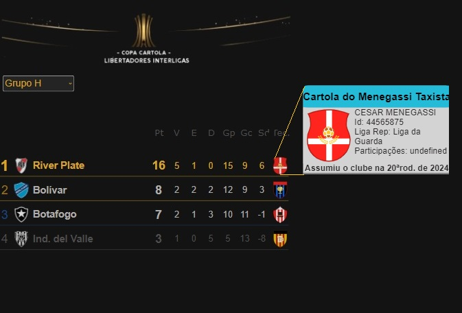
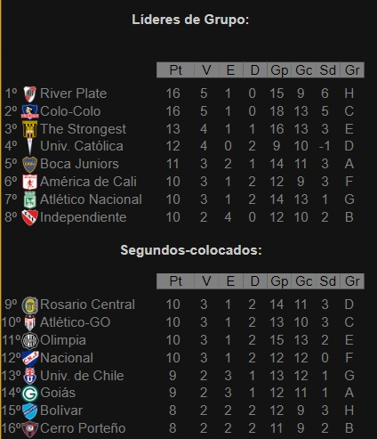
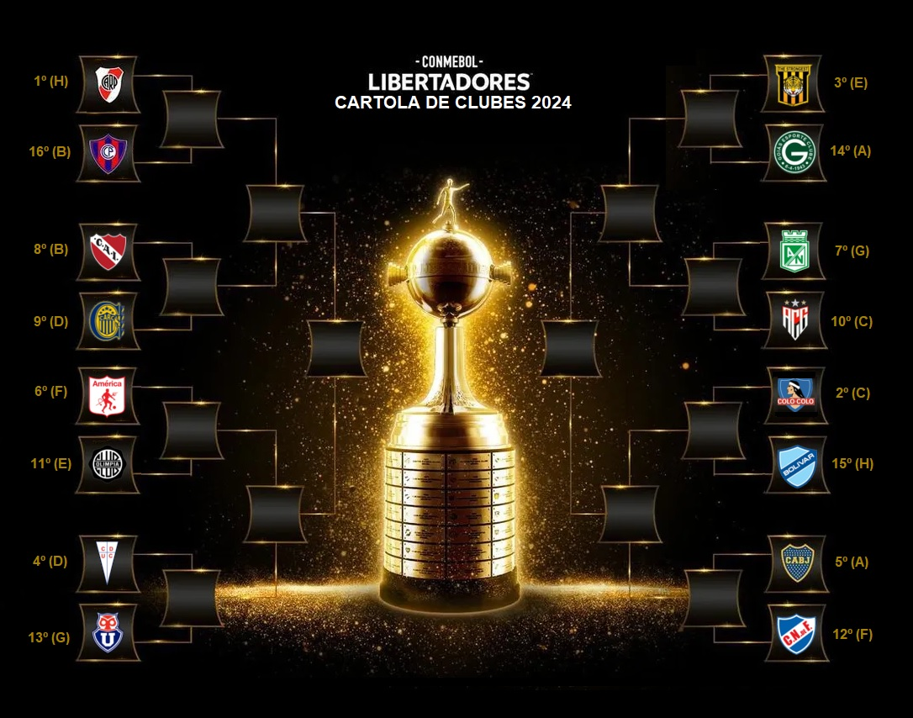

Campeonato de Cartola
A vitória no cartola é o sucesso do seu time!

Redação Cartola - 21/09/2024 - 15h15min
Com cinco vitórias e um empate, River Plate do Menegassi Taxista encerrou não apenas na liderança do grupo "H", 16pts, como dono da melhor campanha desta primeira fase.
A melhor campanha da primeira fase trouxe a vantagem de posar como único clube a jogar as decisções de mata-mata com a vantagem dos empates, já que, em caso de igualdade nos critérios, passa sempre a equipe de melhor campanha na fase de grupos. 
Primeiro adversário do River Plate nestas oitavas, marcada para as rodadas 29 e 30 do brasileirão, será o Cerro Porteño do "É Dmais team", que ficou com a pior campanha dentre os 16 classificados ao mata-mata, terminando na segunda colocação do Grupo "B", com oito pontos, e por isso terá de vencer ao menos um dos dois confrontos diante dos comandados do "Menegassi Taxista".
Na Imagem abaixo, o chaveamento completo desta segunda fase. O nome dos técnicos, obviamente, se obtêm acessando a tabela de classificação do grupo que o adversário disputou na fase de grupos. 